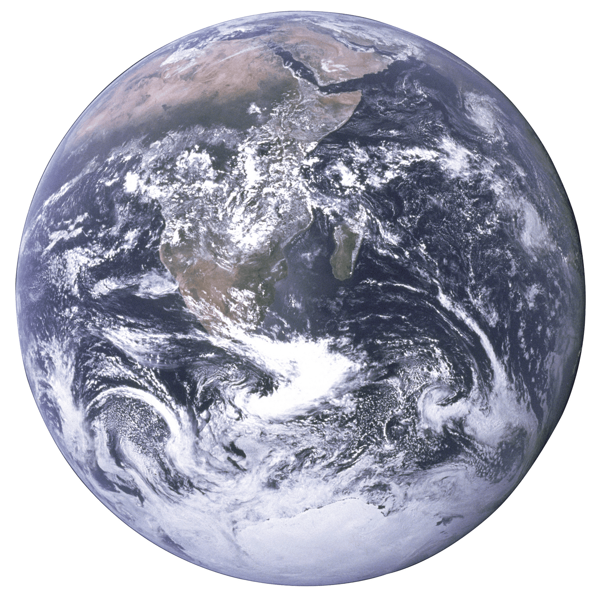

極地冰川因全球暖化加速融化，導致海平面上升、生態失衡。北極冰層減少威脅極地動物生存，南極冰架崩解影響全球氣候循環，突顯減碳與環保行動的重要性。

大氣中的二氧化碳濃度持續上升，從前工業時期的約280ppm增至目前超過420ppm。燃燒化石燃料、工業活動與森林砍伐是主要原因，這加劇了溫室效應，導致氣候變遷、極端天氣增多及生態系統失衡。
自19世紀工業革命以來，全球氣溫持續上升，已增約1.1°C。這主要由於溫室氣體排放增加，尤其是二氧化碳、甲烷等氣體。氣溫上升加劇了極端天氣事件、冰川融化和海平面上升，對生態環境、農業及人類生活造成廣泛影響。
極地冰層快速融化，尤其在北極和南極地區。北極冰蓋面積逐年減少，南極冰架崩解速度加快。這些變化不僅加速海平面上升，還對當地生態系統和全球氣候循環造成影響，進一步加劇全球暖化的影響。
冰層融化導致海平面上升，預計到2100年，海平面將上升0.3到1米，對低窪沿海地區和島嶼國家構成嚴重威脅。海平面上升可能引發洪水、土地喪失和生態系統崩潰，影響數百萬人的生活。